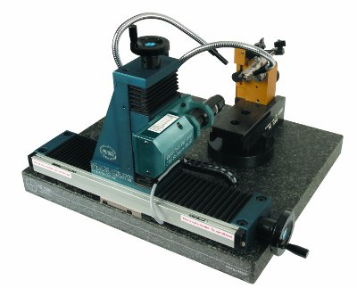

The PG 1000 Line
PG 102
Model# PG 102
Model# PG 102
The PG 102 is the perfect simple solution for the inspection of drill cutting edge heights. Small and ideal for use right at the point grinder location.
Drill sizes range from .078" to 1.562". The complete gage includes five (5) standard v-blocks; standard .0005" (10 Micron) dial indicators are supplied. Optional Accessory Kit 102-1 includes indicating post with fine adjustment, 0005" (10 Micron) dial indicator and radial stop for the inspection of drill index tolerance and web concentricity.
PG 1000-200-E
Model# PG 1000-200-E
Model# PG 1000-200-E

The PG 1000-200-E uses a monocular microscope for the optical inspection of cutting tool geometrys. Rake angles, clearance angles, diameters and lengths are easily seen and measured without inverted images. The complete gage includes standard base features, microscope and digital readout and linear scales on both "X" and "Y" axis and halogen light. View complete specifications or download a brochure from the literature page of this web site.